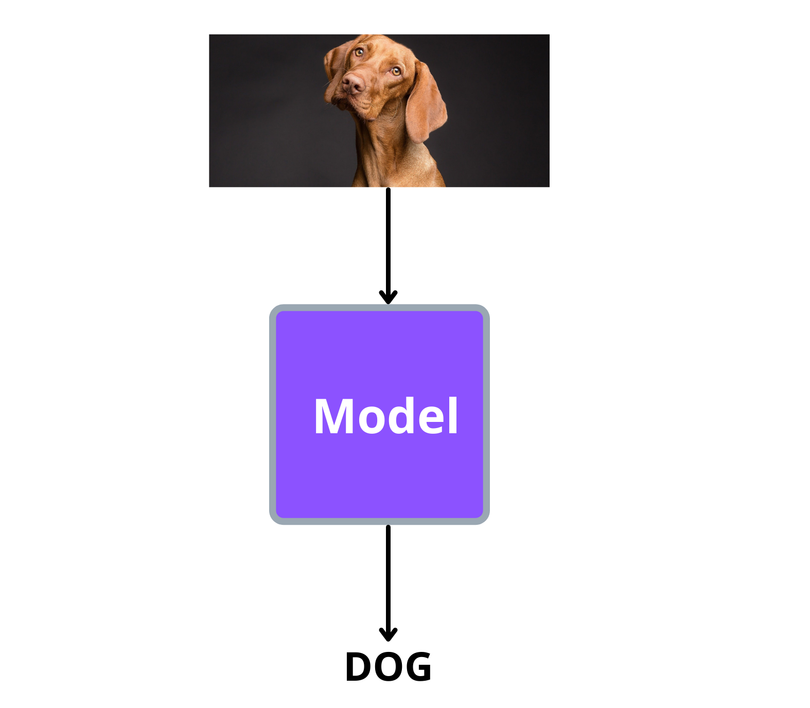
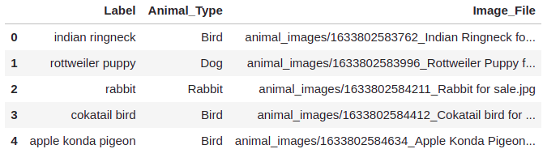

Image classification¶
Introduction¶
Let’s start our journey into the world of computer vision with the task of image classification. Apart from the task, this chapter will also give you a head start to a bunch of other frameworks, libraries and tools that are commonly used by the machine learning community.
By the way, if you are not familiar with image classification, it’s as simple as shown in the below image:
As shown above, the model has to classify the image into the correct class/category that it belongs to.
Dataset¶
The dataset we will be using for this task can be found here. The dataset contain pictures of animals belonging to the following classes:
Bird
Dog
Rabbit
Fish
Cat
Guinea pig / mouse
Other
Of the above categories, we will drop ‘Guinea pig / mouse’ and ‘Other’ from the dataset and use the rest of the categories for this chapter.
The dataset contains a folder called ‘animal_images’ and a csv file with the name ‘animal_data_img.csv’.
The folder ‘animal_images’ contains all the animal pictures whereas the labels of each image is present in ‘animal_data_img.csv’ file.
Here is a sample of ‘animal_data_img.csv’ file:
The ‘Animal_Type’ column contains our labels and ‘Image_File’ contains the path to the image file.
Preparing the data¶
Now let’s load in our csv file and write a dataset loading class using pytorch.
The below code will load our csv by including only the specified columns:
import pandas as pd
csv_path = "../input/animal-images-dataset/animal_data_img.csv"
df = pd.read_csv(
csv_path,
usecols=['Animal_Type', 'Image_File']
)
print(df.head())
Output:
Animal_Type Image_File
0 Bird animal_images/1633802583762_Indian Ringneck fo...
1 Dog animal_images/1633802583996_Rottweiler Puppy f...
2 Rabbit animal_images/1633802584211_Rabbit for sale.jpg
3 Bird animal_images/1633802584412_Cokatail bird for ...
4 Bird animal_images/1633802584634_Apple Konda Pigeon...
As you know, ‘Animal_Type’ column will be the labels for our model. But as of now, it is in string format, so we need to convert them to numbers. But before doing that, let’s drop images with ‘Guinea pig / mouse’ and ‘Other’ labels:
# remove rows with 'Guinea pig / mouse' and 'Other' labels
df = df.query("Animal_Type not in ['Guinea pig / mouse', 'Other']").reset_index(drop=True)
Now let’s convert our label from string to integer format:
label_string = df['Animal_Type'].unique()
label_int = range(len(label_string))
# create a dictionary with string to int label mapping
label_mapping = dict(zip(label_string, label_int))
print(label_mapping)
Output:
{'Bird': 0, 'Dog': 1, 'Rabbit': 2, 'Fish': 3, 'Cat': 4}
Let’s apply this mapping to ‘Animal_Type’ column:
df['labels'] = df['Animal_Type'].map(label_mapping)
We will now a write a simple data loading class with pytorch. The class will take in the dataframe we just created and extract the columns with image paths and labels.
The images are read using python’s ‘PIL’ library and apart from converting the images to tensor format, a RandomResizedCrop transform is applied to the images. This transform crops the image randomly and resizes the resulting image into the specified size.
import torch
from torch.utils.data import Dataset
from torchvision.transforms import transforms
from PIL import Image
from pathlib import Path
class LoadDataset(Dataset):
def __init__(self, df):
self.root_dir = Path("../input/animal-images-dataset/animal_images")
# all the image paths are stores here
self.images = df['Image_File'].values
# all the labels are stored here
self.labels = df['labels'].values
# these transforms are applied to each image
self.transforms = transforms.Compose([
transforms.RandomResizedCrop((100, 100)),
transforms.ToTensor(),
])
def __getitem__(self, idx):
img_path = self.root_dir/self.images[idx]
# load the image and apply the transforms
image = Image.open(img_path)
image = self.transforms(image)
# load the label corresponding to the above image
label = torch.tensor(self.labels[idx], dtype=torch.long)
return (image, label)
def __len__(self): return len(self.images)
Since we have the class to load our images and labels, let’s split our dataframe into train and test sets:
from sklearn.model_selection import train_test_split
train_df, test_df = train_test_split(
df,
test_size=0.2,
shuffle=True,
stratify=df['labels'],
random_state=42,
)
Now, load in the images and labels:
# training set
train_ds = LoadDataset(train_df)
# test set
test_ds = LoadDataset(test_df)